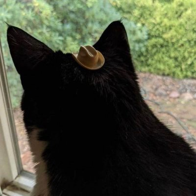
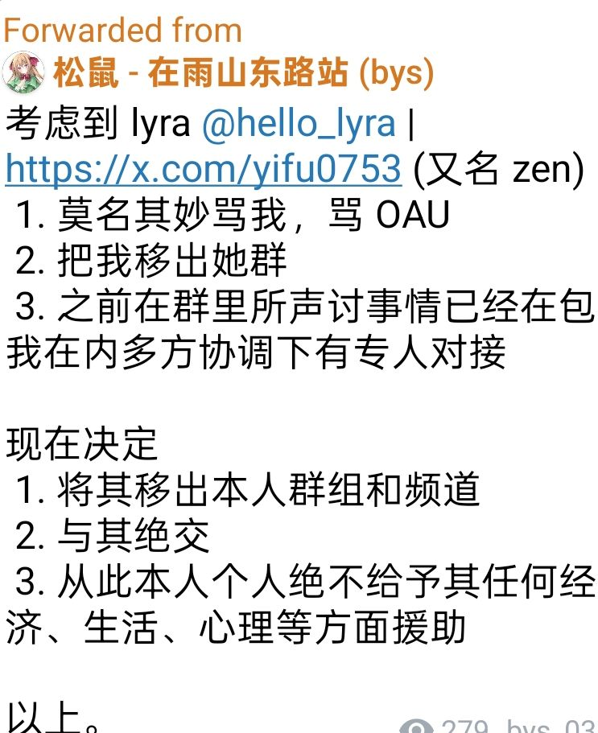
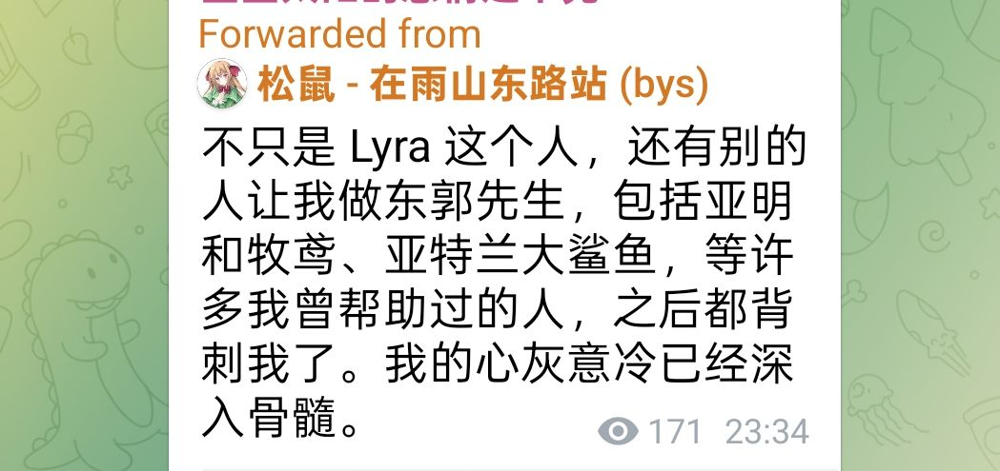

牧鸢
@LwrDHYyuxR22499
北燕书自己不帮，还不许别人帮忙，我来帮受害者就说我有政治目的？
他妈的一个在国外“海外救跨”民运分子，有什么脸说我们
给小孩上网课攒钱救人的带有
“政治目的”能不能要点脸？
当年为什么骂你，你为什么道歉，自己没点数？
光是我亲眼所见，就是第二次看到你挑拨离间我的救援对象了
要么我说你巴不得跨性别者死呢？为了赢什么都干得出来，搞得好像我说的是假的一样。


牧鸢
@LwrDHYyuxR22499
北燕书女士，请您划清界限。
我们全程没有得到过您的任何实质帮助，
我不知道
这究竟是哪个时间线的故事
恰恰相反，跟你反目是因为在2024年我刚刚启动救援工作的初期，您刻意引战
险些直接导致我救援行动失败，没能顺利救出当事人
你道歉了挂在你的博客上
我想变也罢了
但在此之后 https://t.co/TQxzzzl5yZ